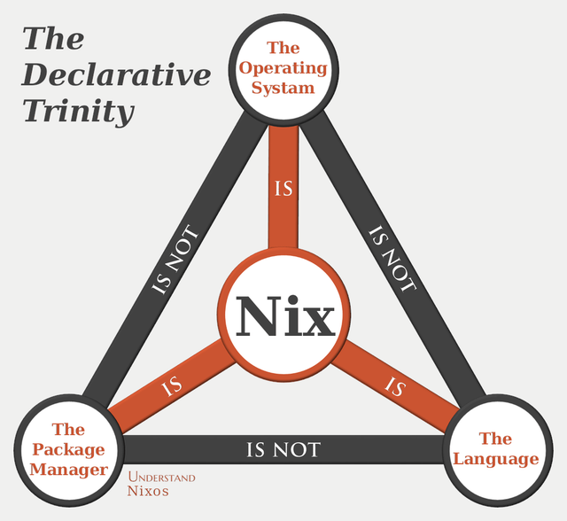
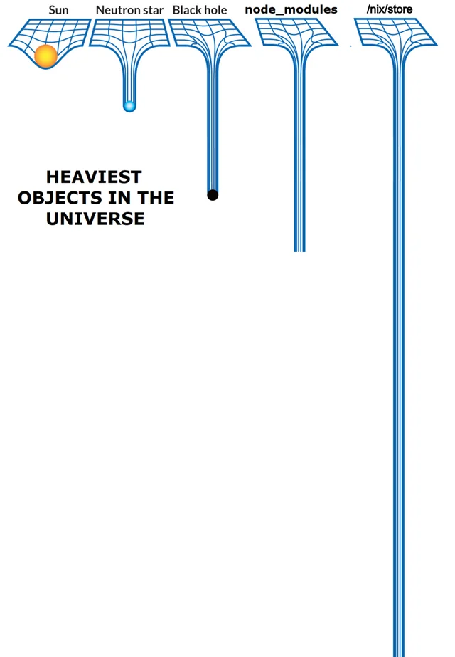

NixOS per DevOps
1. Contenuti
- Cosa sono Nix e NixOS
- Perche' NixOS si presta bene per fare DevOps
- CI/CD con NixOS
- Un caso d'uso
1.1. Disclaimer
- Ma
xlo posso fare anche cony! - Il mio approccio con Nix e' ortodosso, ma nulla vieta un'integrazione solo parziale
- Molte opinioni personali
- Sacrifichero' un po' precisione a favore di una migliore digeribilita'
- Certe parti sono scarne, questa presentazione e' open source, aiutatemi a migliorarla!
2. Nix

2.1. Nix come linguaggio
Nix e' un DSL funzionale lazy pensato per restituire una struttura chiamata derivazione
2.2. Derivazione
stdenv.mkDerivation {
name = "hello";
src = ./src;
buildInputs = [ coreutils gcc ];
buildPhase = ''
gcc "$src/hello.c" -o ./hello
'';
installPhase = ''
mkdir -p "$out/bin"
cp ./hello "$out/bin/"
'';
- la sintassi ricorda JSON, ma e' Turing completo! (condizioni, funzioni, etc…)
stdenv.mkDerivationwrappabuiltins.derivation
Quando l'evaluator Nix valuta una derivazione crea un file .drv
{
"/nix/store/z3hhlxbckx4g3n9sw91nnvlkjvyw754p-myname.drv": {
"outputs": {
"out": {
"path": "/nix/store/40s0qmrfb45vlh6610rk29ym318dswdr-myname"
}
},
"inputSrcs": [],
"inputDrvs": {},
"platform": "mysystem",
"builder": "mybuilder",
"args": [],
"env": {
"builder": "mybuilder",
"name": "myname",
"out": "/nix/store/40s0qmrfb45vlh6610rk29ym318dswdr-myname",
"system": "mysystem"
}
}
}
2.3. Build della derivazione
Il file drv contiene tutte le informazioni necessarie per costruire l'output della derivazione.
Se la derivazione dipende da altre derivazioni prima vengono buildate queste.
2.4. Input addressed vs content addressed
Input addresssed: l'output della derivazione finira' in un path che contiene un hash ottenuto partendo alcune informazioni tra cui il nome, la versione, il builder e i nomi degli input (quindi dai loro hash).
In questo modo e' possibile sapere l'output di una derivazione prima di buildarla.
Le build avvengono in ambienti sandboxed senza accesso al sistema (in particolare a internet), in sostanza dipendono solo dalle derivazioni input.
Come possiamo buildare qualcosa se non possiamo scaricarne i sorgenti?
Fixed output: se siamo in grado di esplicitare l'hash del contenuto nel file drv (prima che avvenga la build) allora la sandbox dove avverra' la build avra' accesso a internet (git, curl, etc…)
Corollario: risalendo il grafo delle dipendenze di una derivazione alla fine troveremo sempre derivazioni fixed output.
Sono dette anche content addressed.
2.5. Demo
https://github.com/NixOS/nixpkgs/blob/nixos-unstable/pkgs/games/umoria/default.nix
nix derivation show nixpkgs#umoria nix build nixpkgs#umoria -L --rebuild
2.6. Nix store
Dove finiscono gli output delle derivazioni?

2.7. Dipendenze e closure
Nix quindi e' in grado di gestire contemporaneamente diverse versioni delle stesse dipendenze.
Potremo per esempio avere sullo stesso sistema versioni diverse di uno stesso software che pero' richiedono dipendenze differenti (dependency hell).
Data una derivazione, e' possibile considerare la chiusura rispetto alla relazione di dipendenza di tale derivazione, ovvero la closure.
Pertanto possiamo copiare un programma con tutte le sue dipendenze da una macchina all'altra semplicemente copiando la closure.
2.8. Cache
Nix prima di buildare una derivazione (un file drv) interroga un substituter (detto anche cache) ed eventualmente scarica l'output della derivazione.
Cio' e' possibile poiche' gli output sono (generalmente) input addressed.
3. NixOS
E se l'intero sistema operativo fosse l'output di una derivazione?
3.1. Caratteristiche
In ordine sparso:
- dichiarativo
- Linux
- usa
systemd - puo' essere rolling release (in realta' fanno release)
3.2. Module system
Nix non e' strong typed, i moduli aggiungono un type system dentro il linguaggio stesso.
Sono estremamente componibili.
Sostanzialmente un modulo fa due cose:
- dichiara opzioni (nomi, tipi, valori di esempio, valori di default, documentazione, etc…)
- imposta altre opzioni (di altri moduli) partendo dai valori delle sue opzioni
3.3. Flakes
Il linguaggio diventa veramente puro (e.g. non puo' leggere path fuori dallo store).
Forniscono un modo unificato di dichiarare le dipendenze dei propri progetti ed interagire con essi da CLI.
Schema di un flake:
{ self, ... }@inputs:
{
# Executed by `nix flake check`
checks."<system>"."<name>" = derivation;
# Executed by `nix build .#<name>`
packages."<system>"."<name>" = derivation;
# Executed by `nix build .`
packages."<system>".default = derivation;
# Executed by `nix run .#<name>`
apps."<system>"."<name>" = {
type = "app";
program = "<store-path>";
};
# Executed by `nix run . -- <args?>`
apps."<system>".default = { type = "app"; program = "..."; };
# Formatter (alejandra, nixfmt or nixpkgs-fmt)
formatter."<system>" = derivation;
# Used for nixpkgs packages, also accessible via `nix build .#<name>`
legacyPackages."<system>"."<name>" = derivation;
# Overlay, consumed by other flakes
overlays."<name>" = final: prev: { };
# Default overlay
overlays.default = final: prev: { };
# Nixos module, consumed by other flakes
nixosModules."<name>" = { config, ... }: { options = {}; config = {}; };
# Default module
nixosModules.default = { config, ... }: { options = {}; config = {}; };
# Used with `nixos-rebuild switch --flake .#<hostname>`
# nixosConfigurations."<hostname>".config.system.build.toplevel must be a derivation
nixosConfigurations."<hostname>" = {};
# Used by `nix develop .#<name>`
devShells."<system>"."<name>" = derivation;
# Used by `nix develop`
devShells."<system>".default = derivation;
# Hydra build jobs
hydraJobs."<attr>"."<system>" = derivation;
# Used by `nix flake init -t <flake>#<name>`
templates."<name>" = {
path = "<store-path>";
description = "template description goes here?";
};
# Used by `nix flake init -t <flake>`
templates.default = { path = "<store-path>"; description = ""; };
}
3.4. nixpkgs
Contiene sia pacchetti (derivazioni) che moduli di NixOS.
https://github.com/nixos/nixpkgs
4. Deploy
nixos-rebuild in realta' permette anche il deploy remoto.
nixos-rebuild switch --flake github:aciceri/nixfleet#kirk --target-host X.X.X.X --build-host Y.Y.Y.Y
Esistono numeri altri tool:
nixopscolmenadeploy-rs- altri
E se volessimo generare immagini per provider cloud specifici?
- AWS
- Google Cloud
- Azure
- molti altri
5. Cosa non risolve Nix(OS)
Niente.
Dico davvero.
Ok, quasi niente.
NixOS non e':
- Terraform
- Kubernetes
- ???
6. CI/CD
6.1. Distribuire cio' che builda la CI su una cache
7. Chicche
7.1. Cross-compilazione
Nix permette di "cross-buildare" le derivazioni in due modi diversi, e funzionano entrambi molto bene.
- vera cross-compilazione
binfmt(QEMU)
7.2. Docker
Nix e' probabilmente un migliore build system per Docker di Docker stesso.
- miglior caching (no "layering lineare")
- vera riproducibilita'
- le immagini Docker non sono altro che derivazioni Nix
- accesso a tutto nixpkgs (quantita' spropositata di pacchetti)
- cross-building migliore (
docker buildx🤮)
7.3. Segreti

Come possiamo avere segreti se le derivazioni nello store sono leggibili da tutti?
Criptiamoli!
agenixsops-nix
Mettiamo nello store solo i segreti criptati e installiamo degli script che li decriptino a runtime.
Questo richiede comunque un meccanismo per distrubuire la chiave privata in fase di deploy.
7.4. Disko
7.5. Impermanence
NixOS e' stateless?
Purtroppo no…
Ma possiamo domare lo stato!
https://github.com/nix-community/impermanence
- e' un modulo NixOS
tmpfscome/(tranne/boote/nix)- elenchiamo tutto cio' che deve persistere (e lo mettamo in una partizione seperata)
- ci forza a sapere dove si trova lo stato delle nostre applicazioni, quindi sappiamo cosa backuppare
7.6. NixOS anywhere
Il mio cloud provider non supporta NixOS… 😭
8. Nix pizza
- "collettivo" di appassionati di Nix in Italia (ciao @zarelit!)
- https://github.com/nix-pizza/infra
- liberta' di sperimentare soluzioni esotiche
- Self-hosting di servizi
- Demo time
9. Linkografia
10. Questa presentazione
e' un flake
nix build github:aciceri/nixos-devops-talk
- e' scritta in org-mode
- buildata con Nix
- pubblicata su GitHub Pages usando Hercules CI
10.1. Repository
https://github.com/aciceri/nixos-devops-talk